Bar Bistro in het centrum van Zandvoort
't Sand
Franse en internationale keuken, alles dagvers en de sauzen zelfgemaakt. Op een steenworp van strand en zee, met een verwarmd terras aan de Kerkstraat.
Ma t/m wo 16:00 – 21:30, do t/m zo 12:00 – 21:30
Heerlijk dineren in Zandvoort
Bar Bistro ’t Sand ligt in het bruisende centrum van Zandvoort. Naast een sfeervolle en warme uitstraling biedt ’t Sand bovenal de lekkerste menu’s voor een betaalbare prijs. Ook voor een gezellige High tea en High wine kunt u bij ons terecht op Kerkstraat 5.
Ons verwarmde terras nodigt u uit voor een heerlijke lunch of diner. In het restaurant geniet u van onze Franse en internationale keuken. Ons aanbod is zeer gevarieerd: van carpaccio tot gamba’s, er is voor elk wat wils.
- DagversGeen kant-en-klare sauzen of kruidenboter: die maken we zelf.
- Verwarmd terrasLunchen of dineren buiten, ook als het fris is.
- High tea & High wineVoor een gezellige middag of avond op Kerkstraat 5.
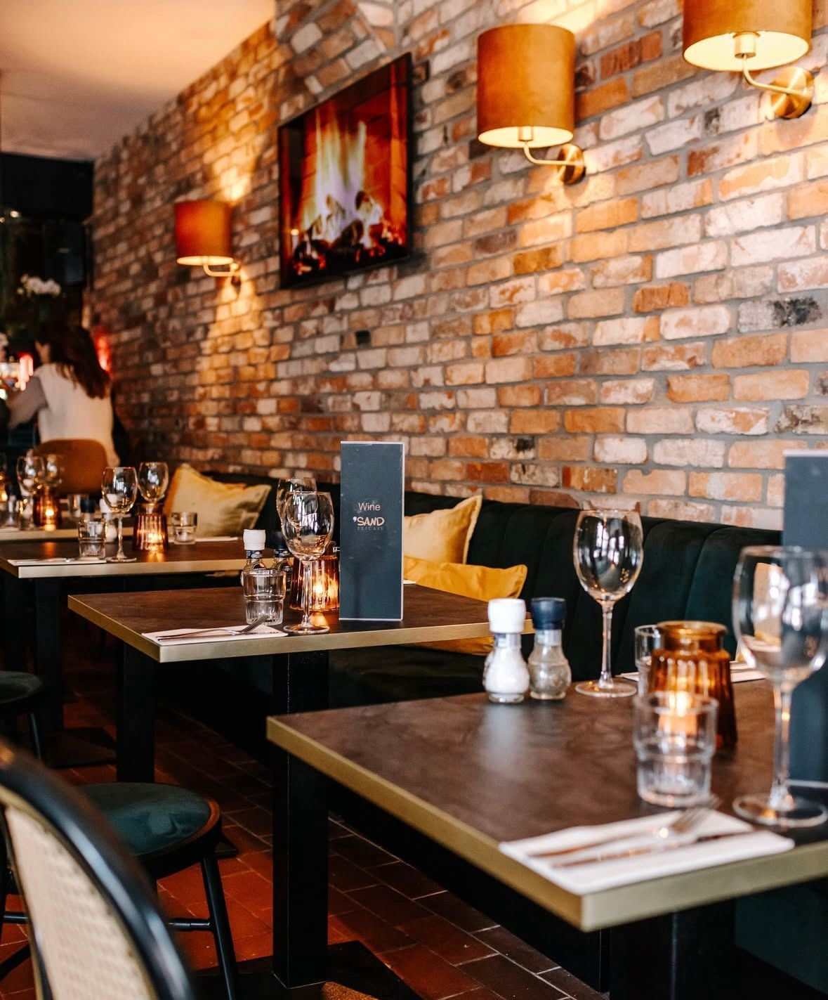
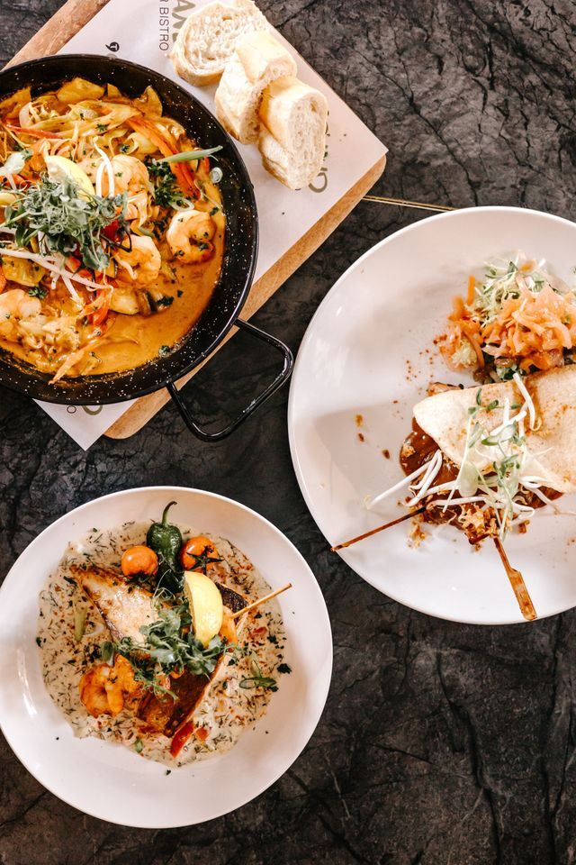
Onze absolute specialiteit: malse spareribs
“Dankzij onze speciale cola-marinade komen zelfs Duitse gasten speciaal naar Zandvoort toe, om onze spareribs opnieuw te kunnen eten. Een groter compliment kunnen we niet krijgen!”
Ook in de Mix Vlees (€ 29,50) en voor de kleintjes op de kindermenukaart (€ 16,50).
Reserveer een tafel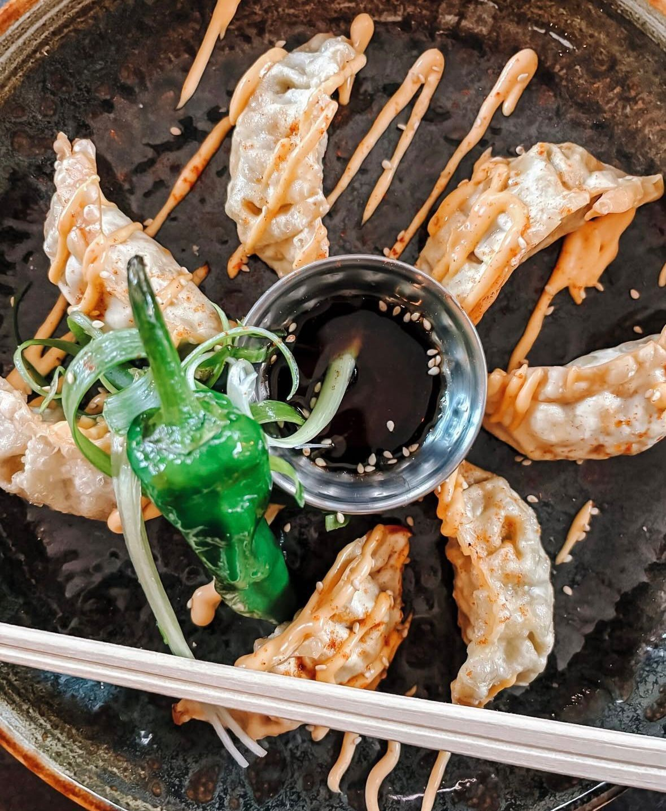
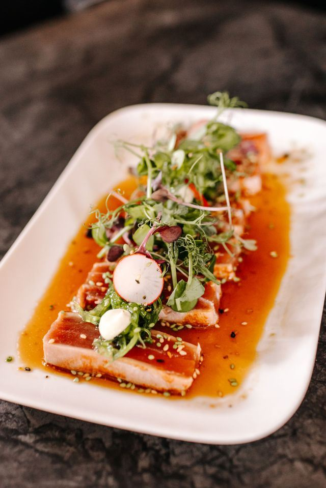
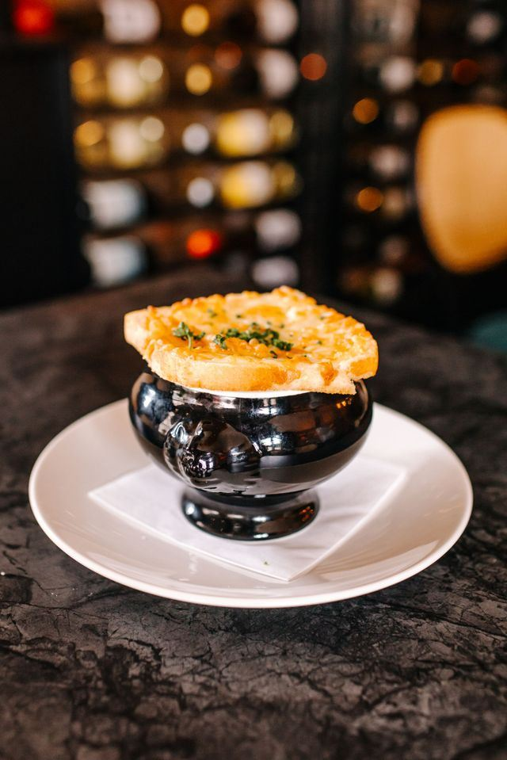
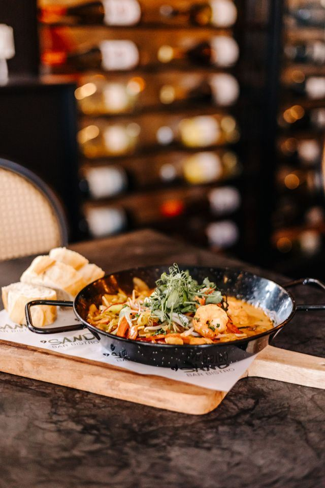
“Tevreden gasten, dáár doen we het voor”
Eigenaar, gastheer en kok Faisel Rikkers is een echte Zandvoorter. Hij werkt al sinds zijn veertiende in de horeca: eerst met een bijbaantje bij strandtent Far Out, daarna in een Zandvoorts restaurantje en als kelner in het Holland Casino.
In de zomer van 2013 nam hij de stap naar een eigen zaak. Op Kerkstraat 5 stond een sushirestaurant te koop; Faisel greep zijn kans en bouwde het om tot ’t Sand, een mooie eetgelegenheid met een Franse en internationale keuken.
“Het gaat ons om het totaalplaatje. De smaak, de gerechten, een heerlijk bijpassend wijntje of biertje. Misschien verwacht men door de benaming eetcafé geen topkwaliteit. Maar dat bieden we wél!”
Faisel Rikkers en team, sinds 2013
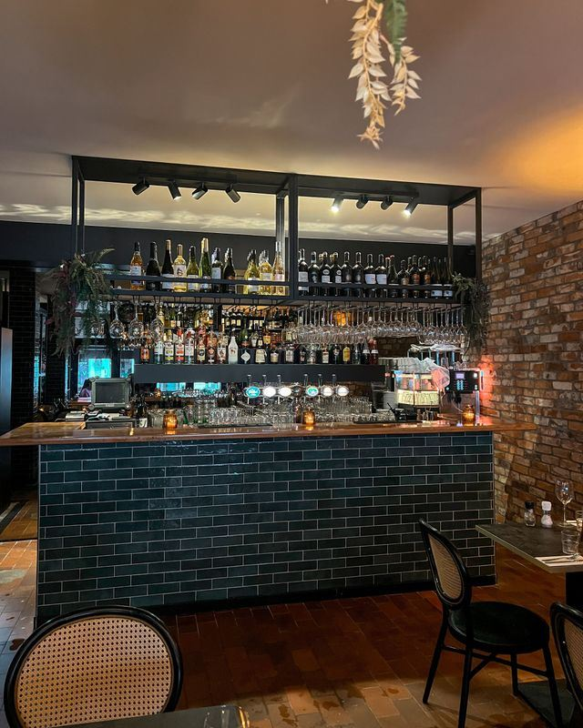
Onze sfeer
Baksteen, warme lampen, een wand vol wijn en een terras dat verwarmd is. Gelegen in een fraaie winkelstraat, vlak bij het strand.
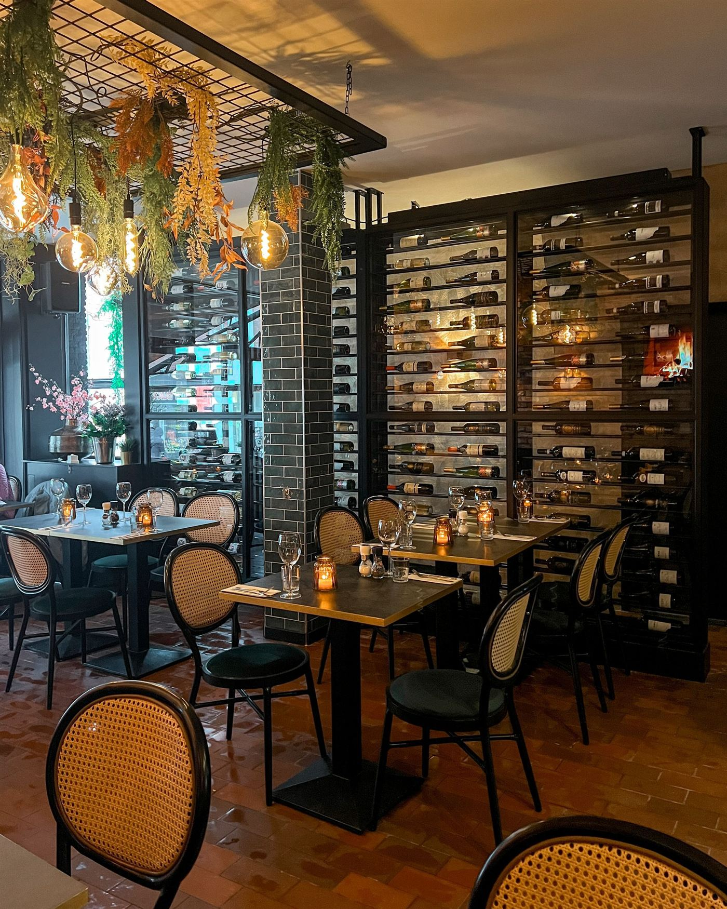
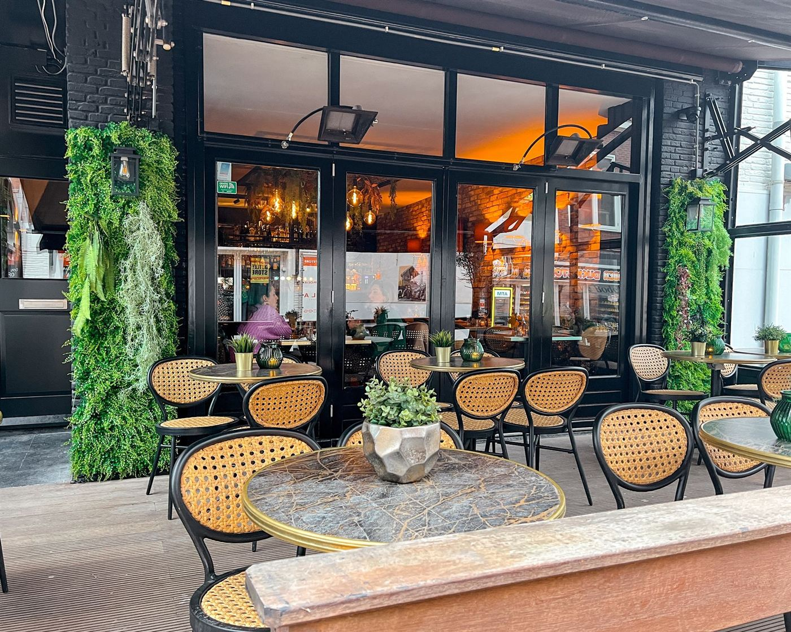
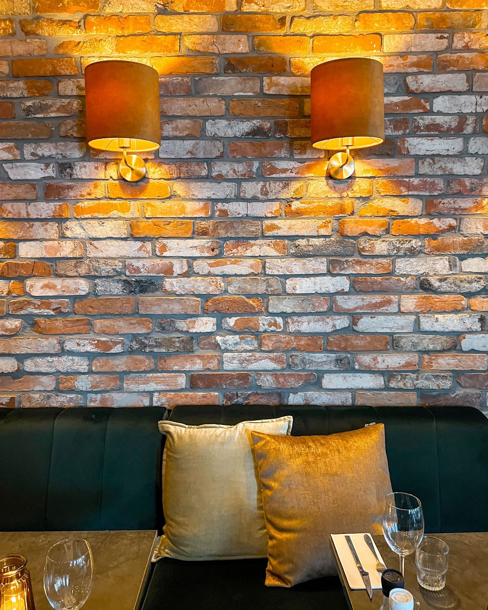
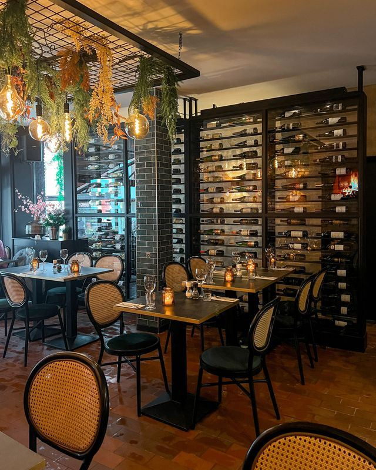
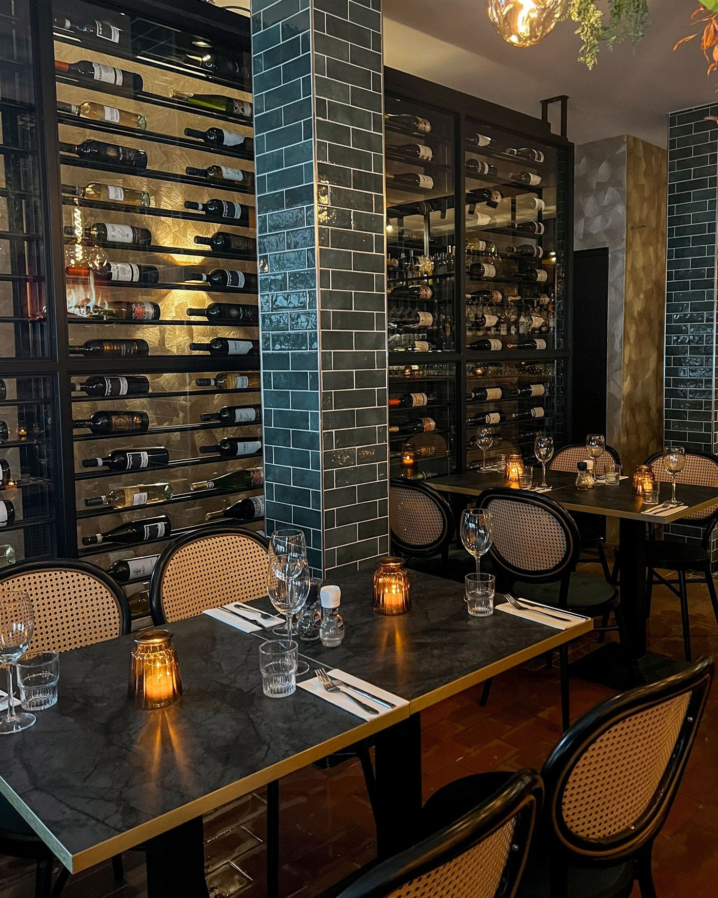
Wij zijn open
| Maandag | 16:00 – 21:30 |
|---|---|
| Dinsdag | 16:00 – 21:30 |
| Woensdag | 16:00 – 21:30 |
| Donderdag | 12:00 – 21:30 |
| Vrijdag | 12:00 – 21:30 |
| Zaterdag | 12:00 – 21:30 |
| Zondag | 12:00 – 21:30 |
Neem contact met ons op
Bar Bistro ’t SandKerkstraat 5
2042 JC Zandvoort